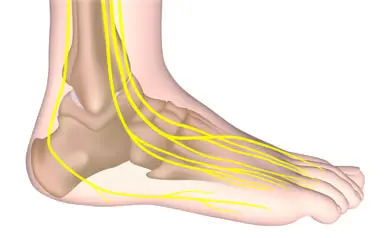
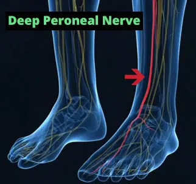

Inside the At-Home Balance Program Thousands of Older Adults Are Adding to Their Daily Routine
A certified balance specialist created a guided movement program inspired by research into foot sensitivity and lower-body stability. Here's a closer look at what's inside and how it works.
Explore this popular at-home balance and mobility program
Explore the Program → — Health & Consumer Desk
Updated March 24, 2026
10 min read
— Health & Consumer Desk
Updated March 24, 2026
10 min read

As we get older, balance and mobility naturally become a bigger focus. Many people find themselves thinking more carefully about stairs, uneven surfaces, or simply moving around the house — and looking for simple, practical ways to feel steadier on their feet.
That growing interest is one reason an at-home balance program called Neuro-Balance Therapy has become so popular. Created by Chris Wilson, a certified balance specialist, the program centres around a simple daily routine using a textured spike ball designed to stimulate the nerve endings in your feet — an area that some researchers believe plays a key role in lower-body stability.
We took a closer look at what's inside the program, the research that inspired it, and what people are saying about their experience.
Neuro-Balance Therapy is a guided at-home balance and mobility program. It includes a DVD series with beginner through advanced movement sequences, a specially designed spike ball for foot stimulation, and a digital version you can access on any device. The program is designed for older adults who want to incorporate a simple balance-support routine into their day.

Neuro-Balance Therapy
An at-home balance support program with guided movements and a textured spike ball. DVD + digital access included.
Explore the Program →Thousands of older adults have added this guided movement routine to their day. See what's included.
See What's Inside → 60-day satisfaction guaranteeThe Research That Inspired the Program
One of the ideas behind Neuro-Balance Therapy comes from research into how foot sensitivity relates to lower-body function. A 2019 study published in Nature (Holowka et al.) compared populations who walk barefoot with those who primarily wear shoes, and explored differences in how their feet interact with the ground.

Your feet contain thousands of nerve endings that help sense the ground beneath you. Among them is the Deep Peroneal Nerve, which plays a role in foot and ankle movement. Some researchers have explored whether stimulating these nerve pathways through targeted exercises could support better balance awareness.
Chris Wilson, the program's creator, drew on these concepts to design a simple daily routine using a textured spike ball. The idea is that gently rolling the ball under your foot may help engage the nerve endings that contribute to foot awareness and lower-leg responsiveness.

The 2019 Nature study referenced by this program is real and peer-reviewed. However, it's worth noting that the study explored foot sensitivity in barefoot vs. shoe-wearing populations — it did not specifically test this product. The program draws inspiration from these research concepts and applies them in a practical at-home format.
How the Program Works
The core of the program is straightforward: sit in a comfortable chair, place the included spike ball under your foot, and roll it in a specific motion for about 10 seconds. The textured surface is designed to engage the nerve endings in your foot in a gentle, relaxing way.

Beyond that daily habit, the full program includes guided movement sequences at three levels — Beginner, Intermediate, and Advanced — designed to progressively support lower-body mobility, stability awareness, and overall movement confidence.
Everything can be done at home, requires no gym equipment, and the movements are designed to be gentle enough for people of all fitness levels.
What Customers Are Saying
Individual experiences may vary. These testimonials reflect personal opinions and are not intended as guarantees of specific outcomes.
"I really enjoy how simple and relaxing the daily routine is. It's become part of my morning and I look forward to it. The whole program is easy to follow and I feel like I'm doing something positive for myself every day."
"My kids got me this program and I wasn't sure what to expect. But the exercises are gentle, the spike ball feels great on my feet, and I appreciate having a structured routine to follow. It's become a nice part of my day."
"I live alone and was looking for something simple I could do at home to support my mobility. This program is exactly that — easy to follow, no complicated equipment, and it fits into my routine without any fuss."
The Neuro-Balance Therapy package includes a DVD series, textured spike ball, digital access, and a home safety guide — all with a 60-day satisfaction guarantee.
View the Program → 60-day satisfaction guaranteeWhat's Included
- Core Program: DVD series with Beginner, Intermediate & Advanced guided sequences
- Spike Ball: Textured foot-stimulation ball included with physical orders
- Digital Access: Instant download version (watch on any device)
- Bonus #1: Home safety checklist — 20 practical tips
- Bonus #2: Downloadable exercise manual with descriptions
- Created By: Chris Wilson, Certified Balance Specialist
- Inspired By: Research into foot sensitivity and lower-body stability
- Price: From $37 (digital) or $47 (DVD + spike ball + digital)
- Guarantee: 60-day money-back, no questions asked
Who Might Find This Program Useful?
- Older adults who want to add a simple balance-support routine to their day
- People looking for at-home options — no gym, no equipment, no appointments
- Anyone interested in foot and lower-body mobility — the program includes progressive levels
- Family members looking for a thoughtful, practical gift for a parent or grandparent
- People who prefer guided programs — the DVD and digital formats walk you through each movement
Please note: This program is a wellness and movement product, not a medical device or treatment. It is not intended to diagnose, treat, cure, or prevent any disease or medical condition. If you have specific health concerns, please consult your healthcare provider.
Summary
Neuro-Balance Therapy is a simple, well-structured at-home balance program that's gained a loyal following among older adults. The combination of a guided movement routine, a textured spike ball for foot stimulation, and progressive difficulty levels makes it accessible for a wide range of people.
At $37-$47 with a 60-day satisfaction guarantee, it's a low-commitment way to explore whether a daily balance routine could be a positive addition to your lifestyle.
For anyone interested in a simple, guided at-home approach to supporting balance and lower-body mobility, Neuro-Balance Therapy is a well-designed option worth exploring. The program is easy to follow, requires minimal time, and comes with a generous 60-day guarantee. It's particularly well-suited as a gift for a parent or grandparent who values their independence and daily routine.
Guided balance routines, spike ball included, digital and DVD access — with a 60-day satisfaction guarantee.
Learn More About the Program → From $37 — 60-day satisfaction guarantee